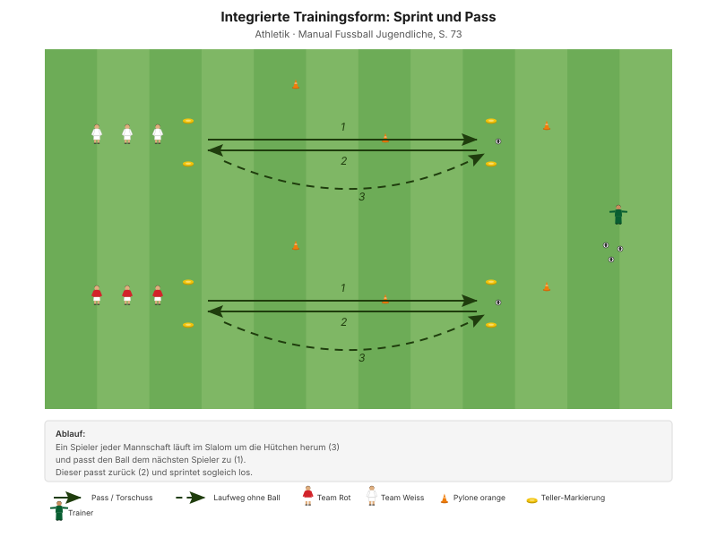
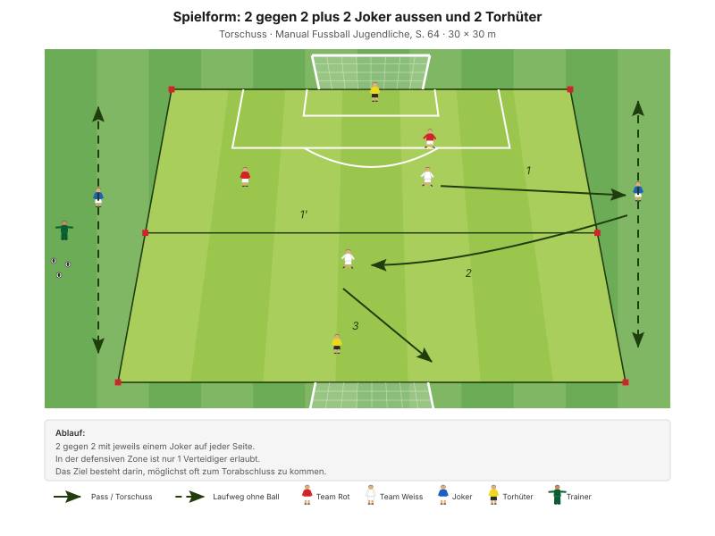
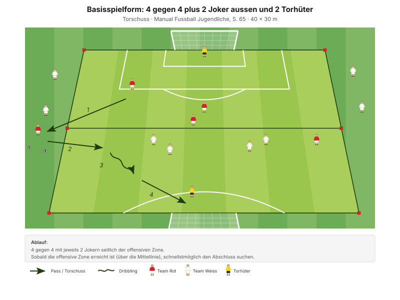

Über die Seite zum Abschluss. Das Zentrum ist beim Gegner meist dicht – aussen ist fast immer Platz, und von dort führt der kürzeste Weg vors Tor.
"Torchancen variantenreich vorbereiten und erfolgreich abschliessen" Erscheinungsform B2, Manual Fussball Jugendliche, S. 57
Die Spielvariante des Manuals hier heisst "Abschliessen über die Seiten" (S. 22). Beide Hauptteil-Formen sind genau dafür gebaut – der Weg zum Tor führt zwingend über einen Aussenspieler.
| Zeit | Min | Teil | Inhalt |
|---|---|---|---|
| 0–4 | 4 | Besammlung | Thema ansagen, Gruppen einteilen |
| 4–16 | 12 | E1 | 3 gegen 1 mit Torschuss · Big 4 zwischen den Wiederholungen |
| 16–22 | 6 | E2 | 3 gegen 1 Torschusswettkampf |
| 22–30 | 8 | E3 | Ball in den Lauf und Torschuss (Explosivität) |
| 30–45 | 15 | H1 | 2 gegen 2 plus 2 Joker aussen und 2 Torhüter |
| 45–48 | 3 | Pause | Trinken, Feld vergrössern |
| 48–70 | 22 | H2 | 4 gegen 4 plus 2 Joker aussen und 2 Torhüter |
| 70–82 | 12 | Abschluss | Freies Spiel 5 gegen 5 plus 2 Torhüter |
| 82–90 | 8 | Ausklang | Cool-down, zwei Entwicklungsfragen, Verabschiedung |
| Total | 90 |
Einstieg 26 · Hauptteil 37 · Abschluss 20 Min. – nach dem Trainingsschema des Manuals (S. 43).
Nur einmal umbauen: Die drei kleinen Einstiegsfelder liegen im späteren Spielfeld. In der Pause fallen die Innenlinien weg, die Aussenzonen bleiben.
Eigene Skizze · Platzaufteilung
Nur einmal aufbauen – das Einstiegsfeld liegt im späteren Spielfeld.
12 Minuten · 3 Felder à 16 × 14 m · alle 12 Spieler
Eigene Skizze · 3 gegen 1 mit Torschuss
3 Wiederholungen à 1'30''–2' – zwischen den Wiederholungen je zwei Präventionsübungen.
"Mit dem 1. Ballkontakt die Folgeaktion (Torschuss) vorbereiten – scharf und präzise abschliessen" SFV-Lernbaustein "Einstieg TE: Torschuss 01", Phase 1
Je zwei Übungen zwischen den Wiederholungen, 25 Sekunden pro Übung:
| Bereich | Übung | Worauf achten |
|---|---|---|
| Fussgelenk | Alphabet balancieren | Das Knie knickt weder nach innen noch nach aussen und beugt sich nicht über die Fussspitze hinaus. |
| Knie | Kniebeuge mit Spannung | Fersen auf dem Boden, Oberkörper gerade, Blick nach vorne. |
| Hüfte | Dead Bug | Kinn zur Brust ziehen, damit der Rücken flach und in Kontakt mit dem Boden bleibt. |
| Hamstrings | Brücke mit Fersengang | Becken hochhalten, damit Schulter, Hüfte und Knie eine Linie bilden. |
"Arbeit mit Zeitvorgaben – nicht mit Anzahl Wiederholungen." Prinzip Körperstabilität, Manual Fussball Jugendliche, S. 75
Zwei Punkte pro Übung nennen, nicht mehr. Qualität vor Tempo.
6 Minuten · gleiche Felder · 3 Wiederholungen à 1'30''–2'
"Mit dem 1. Ballkontakt die Folgeaktion (Torschuss) vorbereiten – scharf und präzise abschliessen" SFV-Lernbaustein "Einstieg TE: Torschuss 01", Phase 2
8 Minuten · 2 Bahnen · Paare bilden
Manual-Vorlage · Diagramm 45 "Sprint und Pass" (S. 73)

Der Lernbaustein ergänzt die Form um den Torschuss am Ende.
| Parameter | Vorgabe |
|---|---|
| Distanz | 15–30 m |
| Wiederholungen | 3 |
| Pause zwischen Wiederholungen | 1/15 (Belastung × 15) |
| Serien | 3 |
| Pause zwischen Serien | 1'30''–2' |
"Erholungszeit: 10- bis 20-fache Dauer der Belastungszeit, abhängig von der Laufdistanz. Vollständig erholen zwischen den Wiederholungen." Prinzipien Explosivität, Manual Fussball Jugendliche, S. 72
15 Minuten · 32 × 30 m · Rotation alle 3 Min.
Manual-Vorlage · Diagramm 22 "2 gegen 2 plus 2 Joker aussen und 2 Torhüter" (S. 64)

8 Spieler im Feld, 4 warten kurz und rotieren alle 3 Minuten hinein.
22 Minuten · 45 × 30 m · alle 12 Spieler
Manual-Vorlage · Diagramm 25 "4 gegen 4 plus 2 Joker aussen und 2 Torhüter" (S. 65)

4 + 4 + 2 Joker + 2 Torhüter = genau 12. Diese Form passt ohne Anpassung auf den Kader.
"Die Basisspielform eignet sich besonders gut, um die Prinzipien sichtbar zu machen und zu beobachten." Manual Fussball Jugendliche, S. 57
Die Aussenbahnen sind besetzt, ohne dass jemand hinlaufen muss – der Seitenwechsel ist damit immer möglich. Sichtbar wird, ob das Team ihn sucht oder ob alles weiter durchs Zentrum läuft.
12 Minuten · gleiches Feld, kein Umbau
Keine Auflagen, keine Bonusregeln. Hier wird sichtbar, was von den 70 Minuten davor hängen geblieben ist.
8 Minuten · Cool-down im Gehen, dann Kreis in der Mitte
Zuerst 3–4 Minuten lockeres Auslaufen und Mobilität, dann der Kreis. Zwei Fragen – die Antworten kommen von den Spielern, nicht vom Trainer:
"Ist es dir gelungen, die Breite und Tiefe des Spielfeldes zu nutzen? Konntest du dir daraus Vorteile verschaffen?"
"Warst du zu jeder Zeit anspielbar?" Entwicklungsfragen zur Spielphase "Wir haben den Ball", Manual Fussball Jugendliche, S. 57
Zusätzlich, falls Zeit bleibt: "Hast du deine Angriffe erfolgreich abgeschlossen? Wenn nein, welches Prinzip hast du vernachlässigt?" (S. 57)
Material aufräumen – laut Teamregel Respekt Teamarbeit, nicht Strafe.
| Teil | Vorlage | Seite |
|---|---|---|
| E1 – E3 | SFV-Lernbaustein "Einstieg TE: Torschuss 01", Phasen 1–3 | – |
| E3 | Integrierte Trainingsform "Sprint und Pass" (Diagramm 45) | 73 |
| H1 | Spielform "2 gegen 2 plus 2 Joker aussen und 2 Torhüter" (Diagramm 22) | 64 |
| H2 | Basisspielform "4 gegen 4 plus 2 Joker aussen und 2 Torhüter" (Diagramm 25) | 65 |
| Ziele, Coaching, Entwicklungsfragen | Kapitelkopf "Wir haben den Ball" | 57 |
| Spielvariante "über die Seiten" | Erscheinungsformen | 22 |
| Explosivität, Körperstabilität | Athletik und Gesundheit | 72, 75 |
| Trainingsaufbau | Trainingsschema (Abb. 19) | 43–45 |
Alle Seitenangaben beziehen sich auf das J+S Manual Fussball Jugendliche (BASPO/SFV, 2022). Spielerzahlen und Feldmasse sind auf einen Kader von 12 Spielern angepasst. Dieser Trainingsplan wurde mit Unterstützung von KI (Claude, Anthropic) erstellt.